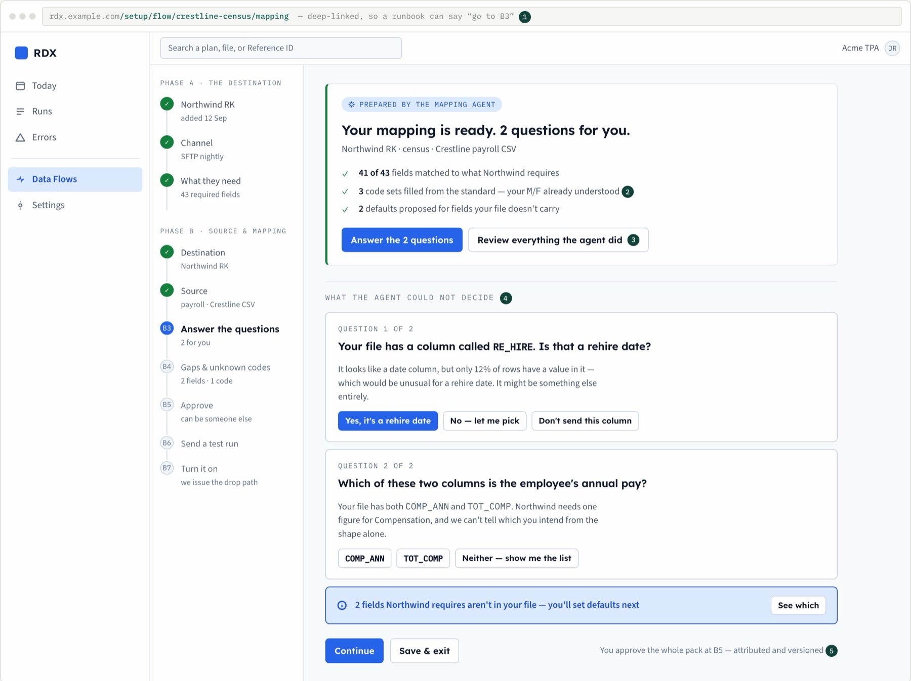
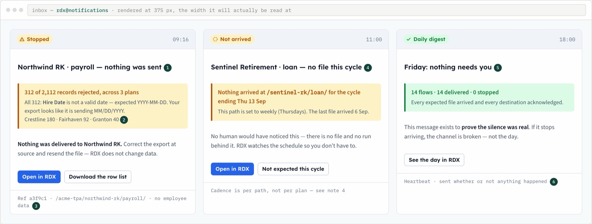
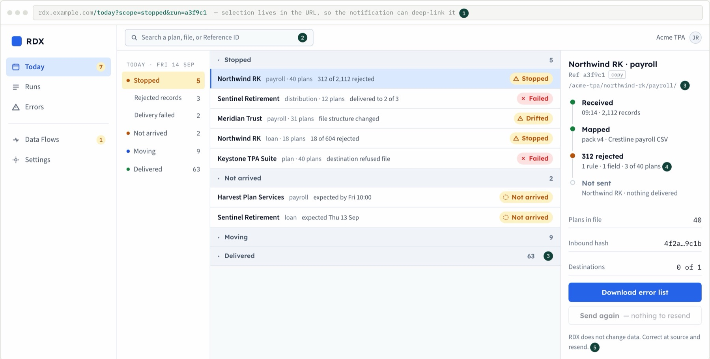
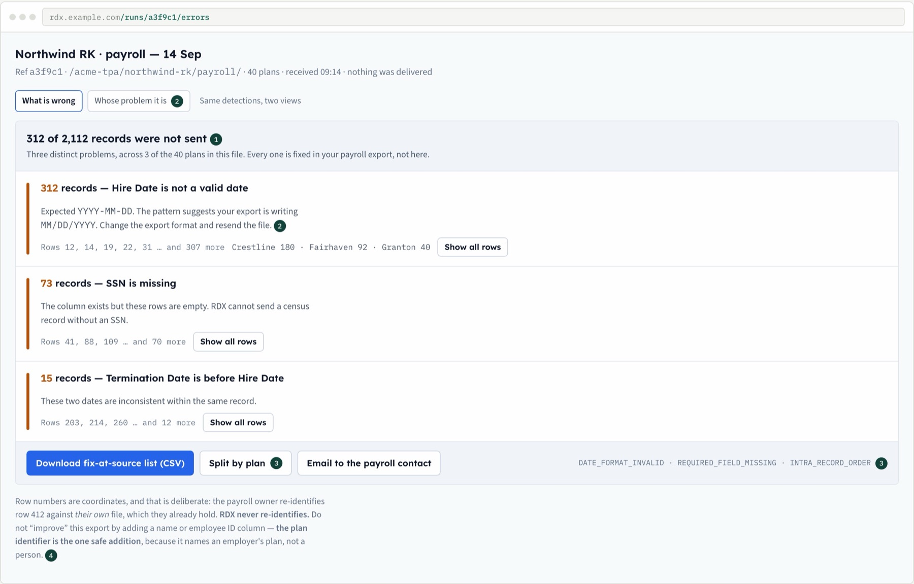
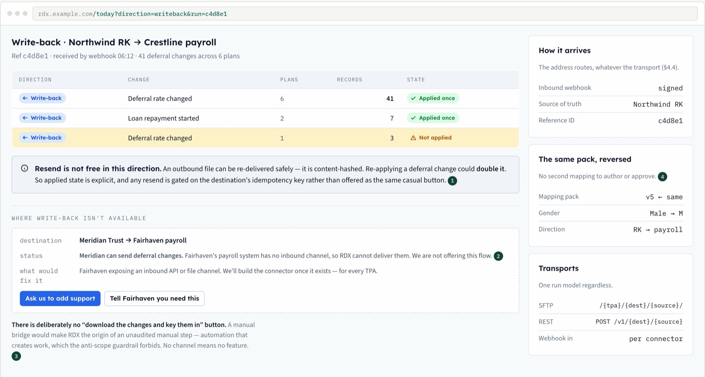

Payroll and match / profit-sharing math engine
A raw payroll file in, exact contribution amounts out. An agent maps and checks the file, a person reviews and approves.
Live demo · 10 minSrivas
The Spark Initiative is complete. It was our internal target to build demos for conference season: the payroll prototype is done, and two further prototypes are built.
One door into CORE, the recordkeeping system. Rules around every agent. A person on every decision that matters. This page is the full record of what the Technology Transformation Office presents at OPERA.
Everything on one page, before the detail.
Percentages marked "by our code review" are estimates from reading repositories, not deck figures.
Two live demos at the centre, ten minutes of questions at the end.
Nine key results under three objectives. The deck rates all nine on track against the 31 Mar 2027 due date.
Here is what the work shows behind each number.
| Key result | Deck vs our reading | Our progress | Why |
|---|---|---|---|
| CORE re-imaging | |||
| Spark Initiative | 100%Owner-reported | Payroll was the accepted scope and it is done. Two more prototypes are built. | |
| Bifrost, complete end to end | Ahead of deckCode review | 12 domain slices on main, a CLI, agent endpoints, a participant API and a showcase. | |
| Toledo · agentic software factory | |||
| Dr Watson testing engine | About 30%Estimate | A pipeline turns manual test cases into intent, and a .NET framework runs about 486 feature files. The two halves are not yet joined. | |
| Cordoba, the context brain | About 40–60%Estimate | Scope is requirement-to-test traceability. It has a spec store, a matcher, 51 service specs and a portal. | |
| Agentic harness orchestrator | About 15–20%Estimate | A working skeleton: intake gateways, a durable orchestrator shell, infrastructure code and CI. | |
| Requirement Engine | 0% code | Business, functional and system requirement designs are written. | |
| Coding and review agents | 0% code | Not started in code. | |
| Organizational AI capability | |||
| Team capability | Deck figure | No repository evidence. | |
| AI practitioner guild | Deck figure | No repository evidence. | |
Percentages marked estimate come from reading the repositories and commit history. Nothing was run to produce them.
The architecture everything this half sits on.
CORE keeps the financial truth. Bifrost is the only door into it. AI agents work through that door, under rules.
| Piece | What it is | What it does not do |
|---|---|---|
| CORE | The recordkeeping system: plans, payroll, accounts, distributions, loans. | It is not reachable except through Bifrost. |
| Bifrost | The integration hub and the only door into CORE. It holds authorization, approvals, retry safety, events and audit, and speaks REST, MCP and A2A. | It does not decide on a person's behalf. |
| Athena | The front end for people and agents. Agents prepare and explain; a human approves. | It never touches CORE directly. |
| RDX In design | A neutral exchange for the retirement industry. A payroll provider or TPA connects once and reaches every recordkeeper. CORE is one participant, reached through Bifrost. | It does not judge the meaning of data, and it is not built on CORE's stack. Today it is a design, with no code yet. |
The trust layer around it, CIATA and AGRUF, is a draft framework from the AI Reboot. See Trust.
Wireframes from the RDX design. A payroll provider or TPA maps once and reaches every recordkeeper.
RDX checks the shape of the data, never its meaning. When something is wrong, it says exactly where, and the sender fixes it at source.





Wireframes from the RDX design (14 Sep 2026). Names such as Northwind, Crestline and Acme are sample data.
Built on CORE through Bifrost as demos for conference season.
A raw payroll file in, exact contribution amounts out. An agent maps and checks the file, a person reviews and approves.
A participant asks about their own money in plain language. The agent answers from their plan and account, and acts only after they confirm.
Several agents and an outside process engine such as Camunda work one withdrawal together through Bifrost. The request can arrive in English, French or Spanish, and a person makes the final decision in CORE.
Prototype 3, presented as architecture. Multilingual: English, French and Spanish.
The third prototype shows what happens when several agents and a process engine work one CORE task together.
A withdrawal arrives as a document, in English, French or Spanish. It has to be read in its own language, checked against plan facts, consented to, submitted and approved by a person, and every step must be auditable.
Immediate focus: finish the Toledo software factory.
Toledo, Cordoba and Dr Watson come first. Then the factory completes Bifrost, and then it builds CORE.
Two layers of governance: one for agents, one for people.
Governs agents
Governs human use of AI
Ten minutes. Bring anything about the architecture, the prototypes, or how your team can use them.
No, not in any flow we have built. Agents prepare and explain. A person approves, Bifrost verifies the person, and CORE applies the change.
Bifrost records the actions and approvals. CIATA requires every agent to have an identity, scope and replayable log.
Agents reach CORE only through Bifrost, with authorization checked at Bifrost. AGRUF sets the rules for people using AI tools.
Yes, through the same Bifrost endpoints (MCP and A2A) under the same rules.
Bifrost is CORE's door. RDX is a neutral exchange for the industry, and CORE is one participant behind it.
Spark was our internal target to build demos for conference season. Payroll was the accepted scope and it is done; the participant and orchestration prototypes extend it.
The orchestrator has a working skeleton. The Requirement Engine and the coding agents have designs and no code yet. Finishing Toledo, Cordoba and Dr Watson is the immediate focus.
The effort moved to the Spark prototypes. Toledo, Cordoba and Dr Watson are the immediate focus next.
Join the AI practitioner guild and bring a workflow to redesign with agents.
Every name on this page, in one line.